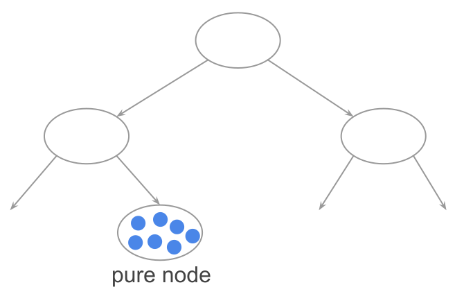
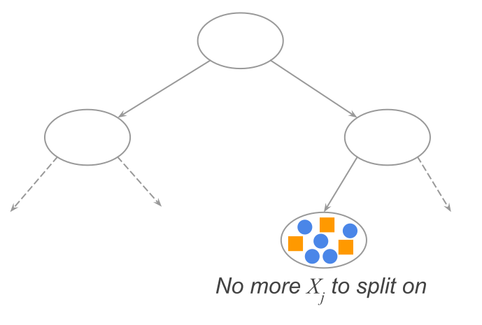
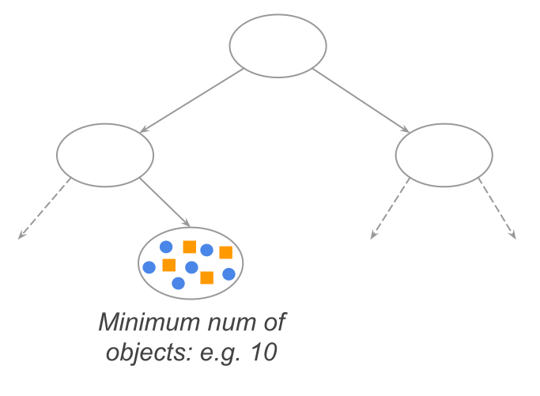
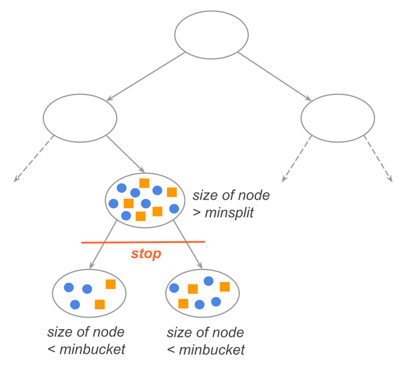
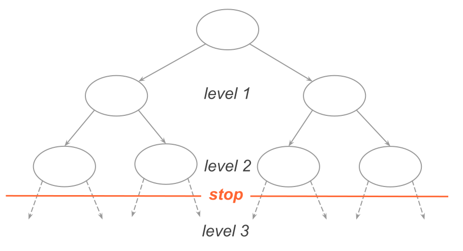

34 Building Binary Trees
As previously mentioned, the building process of a binary tree requires three main components:
Establish the set of all possible binary splits.
Define a criterion to find the “best” node split, which requires some criterion to be optimized based on measures of impurity.
Determine a rule to declare a given node as either internal node, or leaf node.
So far, we have described the first two aspects. But we still need to talk about how to stop the tree-growing process.
34.1 Node-Splitting Stopping Criteria
To grow a tree, we need to recursively apply the steps described in the previous chapter, to all child nodes. But at some point we need to decide whether to stop splitting a given node.
In no particular order of importance, here are a few criteria for stopping splitting a node. We stop splitting a node when/if:
- The node is pure (i.e. a node contains objects of only one class).

- We run out of features (that is, there are no more features to split on).

- A pre-specified minimum number of objects in a node is reached. For example,
stop splitting when a node contains at most 10 elements.
- In
rpart(), this can be specified using theminsplitparameter.
- In

- Size of resulting nodes would be “too small” (e.g. 10, 15, 20, etc.). This
is closely related to the previous rule, but a bit different. For example,
we can have a node with enough objects greater than the minimum required.
However, all resulting binary splits are deemed too small.
- In
rpart(), this can be specified using the parameterminbucket.
- In

- A certain depth level is reached. This is another condition in which a
pre-determined level of depth is chosen, in order to prevent “large” overfitting
trees.
- In
rpart(), this can be specified using themaxdepthparameter.
- In

34.2 Issues with Trees
How good are trees? Do they predict well? Yes and No. A tree can achieve high prediction performance … of the training data. The larger the tree, the better its in-sample performance. In some cases, a (very large) tree can even accomplish zero (or near-zero) error rates. But as you can imagine, this optential for having good in-sample predictions comes with a price: large test error. Why? Because the tree structure is highly dependent on early splits. Put it otherwise, trees are complex models.
To illustrate the complexity of trees, let’s use the Heart data set from An Introduction to Statistical Learning (ISL, by James te al). This data contains 14 variables observed on 303 individuals. The response variable is AHD. We have randomly split the data into training (90%) and testing test (10%), using the training set to fit the response. For illustration purposes, we repeat this operation four times, obtaining four different trees, displayed in the following figure.
Figure 34.1: Different Tress
Notice how different the trees are. This is why we say that trees tend to have high complexity (i.e. high flexibility). Recall that the way in which splits are chosen is by looking for the best split at a given step, without paying attention to what subsequent splits may look like. It can be the case that a less good split leads to a better tree later on. But this is not how the algorithm proceeds.
In other words, trees can become very complex “too soon”, because splits are obtained with a “short-term view”, (best split now with instant gratification), instead of a "long-term view (less good split now with delayed gratification).
Up to now, we are using the notion of complexity in a vague manner. But it is important to think about this for a minute. How do we define complexity in decision trees? Well, there is no unique answer to this question. Perhaps the most natural way to think about a tree’s complexity is by looking at its depth (how tall, or small, a tree is). The taller the tree (that is, the deeper it is), the more complexity.
Knowing that larger trees (large depth level) tend to result in poor out-of-sample prediction, it feels intuitive that we should look for smaller, less complex, trees. We may be willing to sacrifice some of the in-sample error in exchange of increasing the out-of-sample performance. So far, so good. But things are not that really simple. To see this, we need to talk about the bias-variance tradeoff of decision trees.
34.2.1 Bias-Variance of Trees
In general, decision trees have a bias and a variance problem. With small depth levels, they have a bias problem. With large depth levels, they have a variance problem.
The following diagram shows typical error curves of decision trees:
Figure 34.2: Typical error curves of decision trees
Small trees (i.e. small depth) tend to have a bias problem (underfitting). Conversely, large trees (i.e. large depth) tend to have a variance problem (overfitting).
Figure 34.3: Bias-Variance problem of trees
Because the depth of trees is measured in integer steps (not in a continuous scale), it is very difficult to find the “sweet spot” for the right depth level.
Figure 34.4: Bias-Variance problem of trees
Compared to penalized criteria like those used in penalized methods (e.g. ridge regression and lasso), using tree depth to measure complexity, does not provide the same “fine granularity” of a penalty tuning parameter. Why? Because the depth level of a tree is an integer number. You either have a tree of depth 2 or 3 or 4, but you cannot have a tree of depth level 2.78 or 3.125. Therefore, finding the sweet spot for level of depth that minimizes the test-error does not allow us to have a fine grain sensitive analysis of what the best tradeoff is between bias and variance. And this is, to a large extent, the downfall of decision trees. This is why in practice they don’t tend to work as expected (in terms of generalization power).
The main strategy to overcome this limitation is not by changing the depth of the tree, but by focusing on building large trees, and tackling the high variance issue with resampling techniques, and aggregating several versions of individual trees. These are the topics of the next chapters.
34.3 Pruning a Tree
Now that we have described all the main aspects to grow a tree, as well as some of the main drawbacks that a tree suffers from, we can present the formal algorithm of CART-trees, based on cost-complexity pruning.
The building process of CART-style binary trees is to grow a “large” tree and then prune off branches (from the bottom up) until we get an “okay size” tree. Finding the pruned tree of “okay size” implies finding a subtree of the large tree that is “optimal” in some predictive-power sense. This, in turn, requires to handle a tree’s complexity in a different manner: not in terms of a tree’s depth, but in terms of its number of terminal nodes. Here are the main stages:
Grow a large tree, denoted by \(T_{\max}\), typically obtained by getting nodes of a pre-determined minimum size.
Calculate \(err(\tau)\), the error at each terminal node \(\tau \in T_{\max}\). Aggregating these errors \(err(\tau)\) gives us an overall measure of error for the tree: \(E(T_{\max})\)
Prune \(T_{\max}\), from the bottom up, by getting rid of terminal nodes that don’t provide “enough” information gain (i.e. useless leaf nodes). This is done by including a tuning parameter that penalizes the “complexity” of the subtrees (complexity in terms of number of terminal nodes).
To introduce the cost-complexity criterion, we need to first introduce some terminology and notation. We denote \(err(\tau)\), the error measure of terminal node \(\tau\). The type of error function will depend on the type of response:
\(err()\) will be a misclassification rate when dealing with a categorical response.
\(err()\) will be a regression error, e.g. squared error, when dealing with a quantitative response.
In order to use a penalized criterion, we define the penalized error in terminal \(\tau\) with \(\alpha\) complexity parameter as:
\[ err_{\alpha} (\tau) = err(\tau) + \alpha \]
where \(\alpha\) is defined on the interval \([0, \infty)\)].
The total error of a (sub)tree \(T\), also referred to as the cost of a tree, is then calculated as the sum of penalized errors of all terminal nodes:
\[ E_{\alpha} (T) = \sum_{\ell}^{L} err_{\alpha}(\tau_{\ell}) = E(T) + \alpha |\tilde{T}| \]
where \(L = |\tilde{T}|\) is the number of terminal nodes in subtree \(T\) of \(T_{\max}\).
The penalty parameter \(\alpha\) determines the tree size. When \(\alpha\) is very small, the penalty will be small, and so the size of the subtree \(T(\alpha)\) will be large. Setting \(\alpha = 0\), and the obtained tree will be \(T_{\max}\), the largest possible tree. As we increase \(\alpha\), the minimizing subtrees \(T(\alpha)\) will have fewer and fewer terminal nodes. Taking things to the extreme, with a very large \(\alpha\), all nodes will be pruned, resulting in \(T_{\max}\) being the root node.
The idea is to choose several values of \(\alpha\), in an increasing order, and then look for the subtree \(T_m = T(\alpha_m)\) that minimizes the penalized error.
It can be shown that the sequence of penalty values
\[ 0 = \alpha_0 < \alpha_1 < \alpha_2 < \dots < \alpha_M \]
corresponds to a finte sequence of nested subtrees of \(T_{\max}\)
\[ T_{\max} = T_0 \supseteq T_1 \supseteq T_2 \supseteq \dots \supseteq T_M \]
Because the complexity (i.e. penalty) parameter is a tuning parameter, we typically use cross-validation to find the subtree \(T' \subseteq T\) that results in the smallest cost.
In the R package "rpart", the function rpart() allows you to specify the
argument cp which controls the complexity parameter.
34.4 Pros and Cons of Trees
Let’s review some of the advantages and disadvantages of trees.
34.4.1 Advantages of Trees
They work for both types of responses: 1) categorical and 2) quantitative. When dealing with a categorical response we talk about classification tree; when dealing with a quantitative response we talk about regression tree.
They work with any type of predictors: binary, nominal, ordinal, continuous, even with missing values.
They can detect interactions among the predictors.
Another advantage is that there’s almost no need to preprocess data for a decision tree. This is very rare among statistical methods.
Likewise, decision trees make no stochastic assumptions: e.g. no normality assumptions, or other specific distributions about the data.
In general, as long as the resulting trees are not too small, they tend to have low bias.
The graphical display of a tree tends to be easy to read and interpret (at least the main output; there are some summary statistics that might require further background knowledge).
34.4.2 Disadvantages of Trees
Trees are highly dependent on the training set. That is, given a different training set, there is a high chance that you will obtain a different tree. Which means they are prone to overfitting.
Because of this dependency, they suffer from high variance (this is perhaps the main “Achilles’ heel” of decision trees).
Training a decision tree requires a reasonably large number of observations: as a rule of thumb there should be at least 30-50 observations per node.
Recall that decision trees produce splits which involve rectangular regions in the feature space which may not necessarily match the distribution of the observations.
Finding the optimal sweetspot in bias-variance tradeoff is difficult.